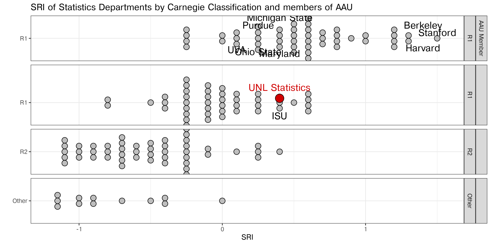
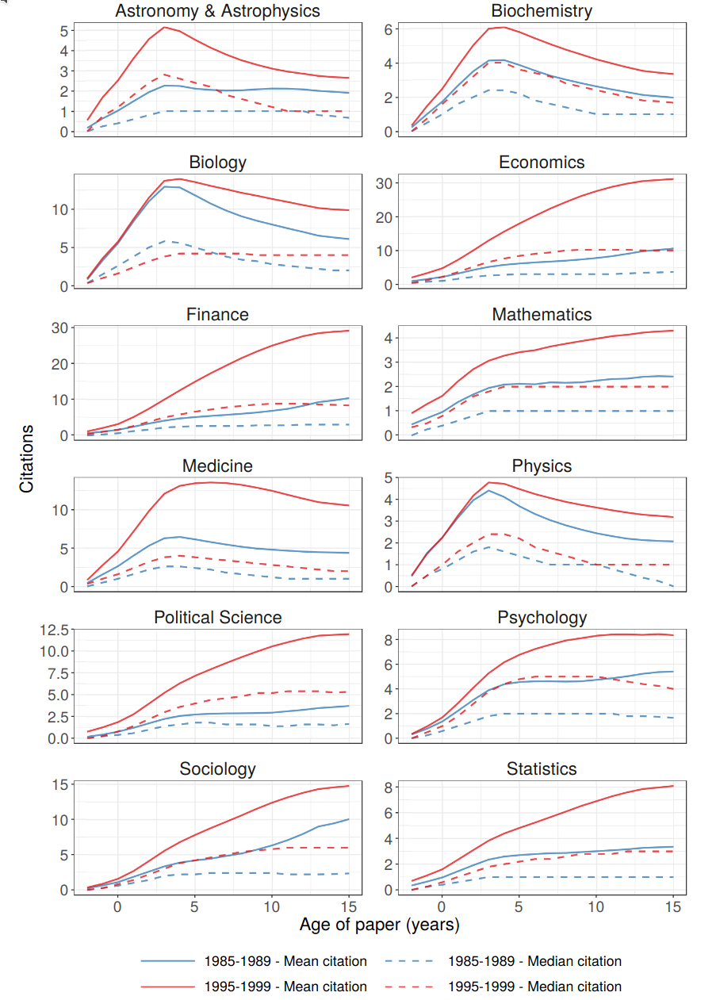
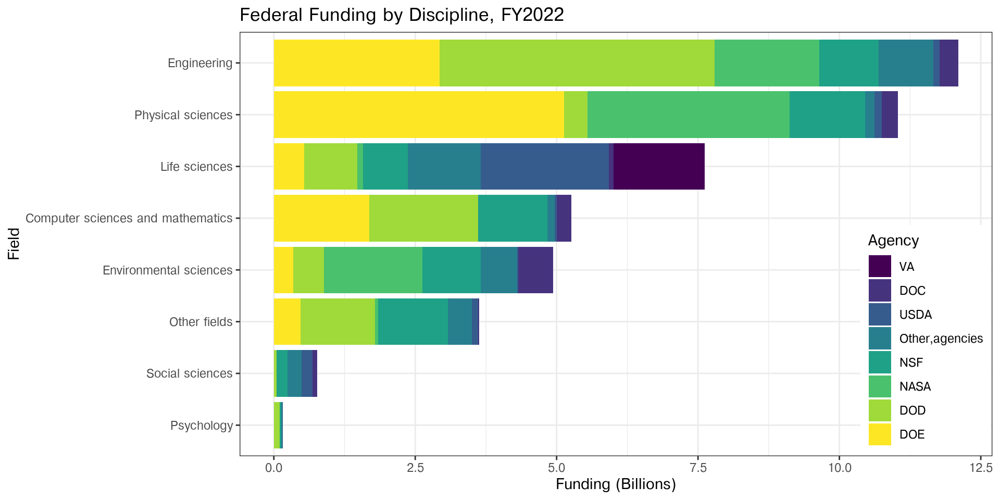

Use of Metrics
Budget Cuts Process
2025-09-29
Scholarly Research Index (SRI)
measure developed by Academic Analytics to assess research performance of individuals and entities
captures nine metrics: amount of Grant dollars, number of Articles, Awards, Books, Chapters, Conference Proceedings, Patents, and Trials.
different disciplines operate differently: metrics are combined into SRI with different weights
Discipline specific weights
Different distributions
SRI are comparable within discipline (SRI rank, SRI Percentile)
SRI are NOT comparable across disciplines
Different disciplines have different SRI distributions: SRI \(\sim N(\mu_D, \sigma_D)\)
Same SRI - Different SRI Percentiles (Ranks)
SRI Percentiles for Comparisons across disciplines
- one-to-one correspondence between ranks \(R\) and normal scores \(S\):
\[ S \approx N^{-1}_{\mu, \sigma} \left( 1 - \frac{R-c}{n - 2c + 1} \right) \]
For \(c = 3/8\) this is the Blom method (Blom 1958).
- for SRI \(\sim N(\mu, \sigma_D)\) (same mean \(\mu\)) use (within discipline)
SRI Percentiles(removes dependence on \(\sigma_D\))
Comparison to AAU
- ‘Custom’ Index is not equal to SRI
- Different \(\mu_D\)
- Smaller sample sizes
Suggestion: separate AAU criteria from research average, use SRI Percentiles as measure for Departments research
Statistics in AAU
Every land-grant AAU has a statistics department
Books
Analysis of Categorical Data with R
- 1st edition came out October 2014, but was reported by publisher in December 2013.
- 2nd edition missed the university’s cutoff.
Predictive Statistics
- Only Bertrand Clarke got credit. Jennifer Clarke has a fractional apportionment in Statisics, but the book doesn’t appear in her record at all.


Books
In small departments that aren’t book-centric, these issues matter a lot
- no assessment of variability
Data accuracy: Academic Analytics errs on the side of caution
- Hard to get individual access to check records and fix issues
- Department chairs have access but don’t have time to audit everything
(and didn’t know how important it would be!)
Citations
citations_2014_2023_avg
AAU uses Web of Science InCites for the citations data. UNL does not currently subscribe to InCites and so is using Academic Analytics to track and report this data.
Incorrect: UNL Library has InCites access
Academic Analytics citations are 2020-2023 (4 years) vs. 10 years
Short window = preference “fast” disciplines (CS) and hurt:
- longitudinal or human subjects research
- foundational research (stats, math)
- disciplines with longer publication/review cycles
Citations

Galiani, Sebastian and Gálvez, Ramiro H. (2017), “The Life Cycle of Scholarly Articles Across Fields of Research.” http://dx.doi.org/10.2139/ssrn.2964565
The mean citation number differs by field
The trajectory of citations differs by field
- increasing in Statistics, Math, Finance, Economics, Sociology
- level off in Political Science, Psychology
- “peak” in Astronomy, Biochem, Biology, Medicine
Timing of citation curves is very field-specific
4 years hits the peak citation rate in only very fast moving fields
Grants
Counts 3.xx times (depending on discipline SRI weights)
- fraction of input to
sri_aau_public_peers_z_score research_awards_growth_inc_nuf_z_scoreawards_budget_inc_nuf_z_scorep1_expenditures_normalized_z_score
- fraction of input to
Each of these representations have
- quality issues (source data)
- meaning issues
Grants
Grants
No ability to trace individual contributions to totals even given metric definitions
- lead PI vs. coPI
- listed but effective % of 0
- which grants count for which metrics
SC3L & Stat department: work for grants without being on the grant
Grants (ideally)
Better documentation
Individual and Department level reports
- Every grant within the time period
- Whether and how it contributes to each metric
Transparent correction process
This should be automated – like budget reports
Grants
Grants
research_awards_growth_inc_nuf_z_score research_awards_growth_inc_nuf_fy2020_total_research_awards
research_awards_growth_inc_nuf_fy2024_total_research_awards
Not per-capita (FTE in research or overall)
Growth as a % of UNL growth will favor:
- Departments with large grants due to discipline
- Departments with many people
Variability from year-to-year is much larger with
- smaller departments
- shorter grant periods
Grants
p1_expenditures_normalized
p1_expenditures_2014_2023_avg/t_tt_headcount_2014_2023_avgdoesn’t take into account apportionmentswhich department spends the money doesn’t always map to % effort on the grant
all other issues with grant funding comparisons across disciplines also apply
Articles
Books count as a separate research factor
Article- and Conference-publication centric disciplines are disadvantaged
SRI Percentile accounts for this problem
Re-creating SRI weightings without articles gives an incomplete picture